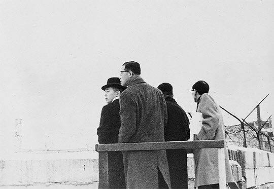
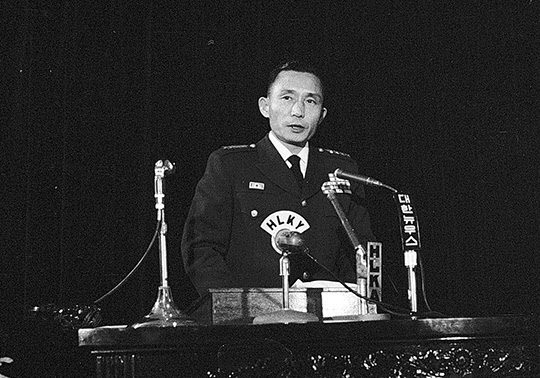
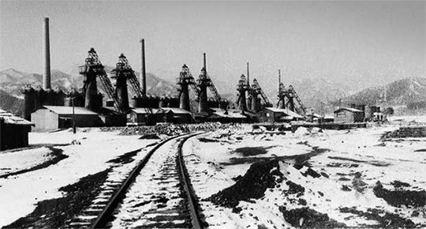

연재일 2014-09-11출처 조선일보 프리미엄조선 연재
박태준은 1961년 세밑에 유럽으로 날아갔다. 구라파통상사절단 단장이었다. 최고위원은 혼자였다. 통상도 통상이거니와 선진국 산업현장을 견학할 좋은 기회였다. 백문불여일견(百聞不如一見)을 진리로 신봉하는 그의 목적의식에는 ‘통상’보다도 ‘공장’들을 살피려는 의욕이 더 강했다. 아직 수출할 공산품이 없는 우리가 무엇을 ‘통상’할 것인가.
박태준에게 그해 겨울의 유럽 견문은 군대시절에 두 번 미국 연수를 갔을 때처럼 좋은 자극이 되었다. 그는 조선시대 500년의 ‘사농공상’이 우리를 얼마나 낙후시켰는가를 새삼 뼈저리게 느낄 수밖에 없었다. 우거진 숲들도 우리의 벌거숭이 민둥산들과 대비되어 정말 부러웠다. 베를린에서 그는 눈에 덮인 철조망도 보았다. 분단 독일과 유럽대륙을 지배하는 냉전체제의 상징물. 그러나 청년장교로서 6‧25전쟁을 감당했던 이방인으로서는 별난 긴장감을 맛볼 수가 없었다. 한반도의 휴전선에 비하면 그것은 마냥 허술하고 느슨해 보일 따름이었다.

박태준은 이탈리아에 들러 존경하는 선배와 만나는 행운도 누렸다. 이종찬 장군이 주(駐) 이탈리아 한국대사로 근무하고 있었던 것이다. 1953년 휴전 직후에 육군대학 교장이었던 이종찬, 그때 수석 졸업자였던 박태준. 선배는 이역만리 로마에서 재회한 후배에게 오래 간직해온 따뜻한 마음을 베풀었다. 그때로부터 기나긴 세월이 흐른 뒤에도 박태준은 로마에서 이종찬 선배와 나눈 평범한 대화 한 토막과 그가 한국으로 보내준 편지 한 통을 잊지 못한다.
“이 사람아, 이탈리아에 와서 비행기 타고 다니면 바보야.”
“가는 곳마다 문화유적이 널려 있다는 말씀이군요.”
“그래. 내 차를 내줄 테니 부담 없이 타고 다니게.”
선배는 후배에게 아주 즐거이 자신의 승용차를 내주었다.
선배가 후배에게 국제우편을 부친 때는 박정희 군사정권의 민정이양에 대해 여러 정파(政派) 간 이견(異見)이 서로 좌충우돌을 일으키는 시기였다. 이종찬은 박태준에게 진지하게 권유했다. ‘부디 자네는 정치로 나가지 말고 군으로 복귀하여 군의 지도자로 남아 달라’는 내용이었다.
1962년 새해가 밝았다. 대한민국 달력이 처음 단기(檀紀)를 버리고 서기(西紀)를 도입했다. 참으로 사소한 일 같아도 그것은 서구적 근대화의 길을 가고 말겠다는 통치자 박정희의 단호하고 결연한 의지를 반영한 ‘개혁’의 결과물이었다.
박정희의 신년대담에서 키워드는 단연 ‘경제부흥’이었다. 바야흐로 한국사회는 오천 년 농경사회의 막을 내리고 산업사회로 진입하려는 국민 총동원 체제에 들어서고 있었다. 이때가 ‘박정희의 박태준’에게는 군인에서 정치인이 아닌 경제인으로 변모하면서 인생의 새 지평으로 돌진해 나갈 ‘진정한 출발시간’이었다.

상공담당 최고위원 박태준은 업무추진의 원칙이 확고했다. 완벽주의, 확고한 신념, 강력한 추진력, 그리고 그 삼위일체. 이것은 날이 갈수록 그의 특장으로 자라났다. 그는 경제이론과 열악한 현실 사이의 모순을 통찰하면서, 모순이 상충으로 치닫지 않고 상보(相補)로 나아갈 수 없는가를 고민할 때가 잦았다. 그러한 가운데 전국의 경제개발 현장을 누비고 다녔다. 주요 기공식엔 반드시 참석하고, 이후 네댓 번씩 다시 찾아가 확인, 독려, 애로사항 경청을 되풀이했다. 그것은 자신도 모르는 사이에 ‘경영수업’의 제1장이 되고 있었다.
1962년의 한국경제는 일차방정식도 불필요할 만큼 단순하고 왜소했다. 텅스텐 같은 지하자원과 싱싱한 해산물을 몽땅 팔아도 수출은 4000만 달러였다. 전력은 20만 킬로와트, 시멘트 생산은 16만 톤, 철강 생산은 6만5천 톤에 미달. 도로는 일제 때의 신작로 수준, 철도는 그럭저럭, 공항과 항만 시설은 형편없음…. 한국경제는 거의 ‘무(無)’ 상태에 널브러져 있었다.
철(鐵)이 있어야 철길도 깔고 교량을 만들어 도로도 연결하고 항만설비도 갖출 수 있다. 철이 있어야 건물도 짓고 공장도 짓고 학교도 짓는다. 철이 있어야 선박도 만들고 자동차도 만든다. 철이 있어야 냉장고도 텔레비전도 만들고 밥솥도 만든다. 못도 바늘도 철로 만든다. 한국은 빚을 내서라도 철을 수입해야 했다. 그래서 제1차 경제개발 5개년계획에 ‘종합제철공장 건설’이 포함될 수밖에 없었다.
1962년 5월, 강원도 삼척의 삼화제철 용광로 화입식. 박태준은 설레는 마음으로 달려갔다. 회사 대표와 함께 불을 넣고 사진을 찍고 박수를 쳤다. 그러나 서울로 돌아와 하룻밤을 보낸 그는 믿기 싫은 보고를 들어야 했다. 쇳물이 끓지 않고 고로의 불이 꺼져버렸다는 것.

박정희는 국가기간산업으로서 종합제철의 절대성을 뼈저리게 인식하고 있었다. 혁명 2년간 성과를 집대성해서 이듬해(1963년) 9월에 펴내게 되는 그의 보고서에는 ‘1962년부터 6년간 울산에 건설할 제철소는 연간 30만1천 톤을 생산할 능력을 갖게 될 것이고 그렇게 되는 날에는 연간 외화 약 2120만 달러를 절약하게 됨은 물론이고 2000여 명의 고용도 이루어진다’는 내용이 담긴다.
지금 우리의 눈에는 그저 소박해 보이는 그 거국적 철강육성 정책 덕분에 ‘한국 철강사 초창기’에 주요 대목마다 등장하는 미국인이 하나 생겨났다. 코퍼스(Coppers)라는 철강엔지니어링회사 대표, 포이(Foy). 이 이름은 1965년 박정희가 미국 피츠버그시를 방문할 때도 주요 인물로 등장하고 포항종합제철 초창기에도 자주 등장한다.
1962년 12월 30일 김유택 기획원 장관, 이정림 한국종합제철 사장, 포이 미국투자공동체 대표 간에 한미(韓美)종합제철 건설 기본계약을 체결하였다. 외자 1억1780만 달러, 내자 49억549만원(3780만 달러)을 조달해 향후 42개월 내에 연산 31만 톤 종합제철소를 울산에 짓기로 한다는 것. 미국 투자공동체는 외자의 75%를 미국국제개발처(AID) 차관에서 끌어오기로 했다.
그러나 AID가 차관 제공에 반대한다. 이유는 경제논리. ‘그 정도 규모의 제철소를 돌리는 데는 철광석과 석탄 수입에만 연간 3500만 달러가 필요한데 한국은 연간 수출 실적이 4200만 달러(1961년)밖에 안 되니 도저히 원료수입을 감당할 수 없다’는 것. 결국 박정희의 그 거국적 울산종합제철소 건설 계획은 수포로 돌아갔다.
국가경제가 ‘무(無)’에서 꿈틀대던 시절에 연산 조강 30만톤 규모의 ‘소박하기 짝이 없는 종합제철소 건설’에 장밋빛 희망을 걸었으나 그마저 이루지 못하여 남몰래 한숨지은 박정희. 그로부터 꼬박 30년 뒤에는 그가 지목한 박태준이 연산 조강 2100만톤 규모의 세계 최고 종합제철소를 완공하여 그 한을 시원하게 풀어주지만…….